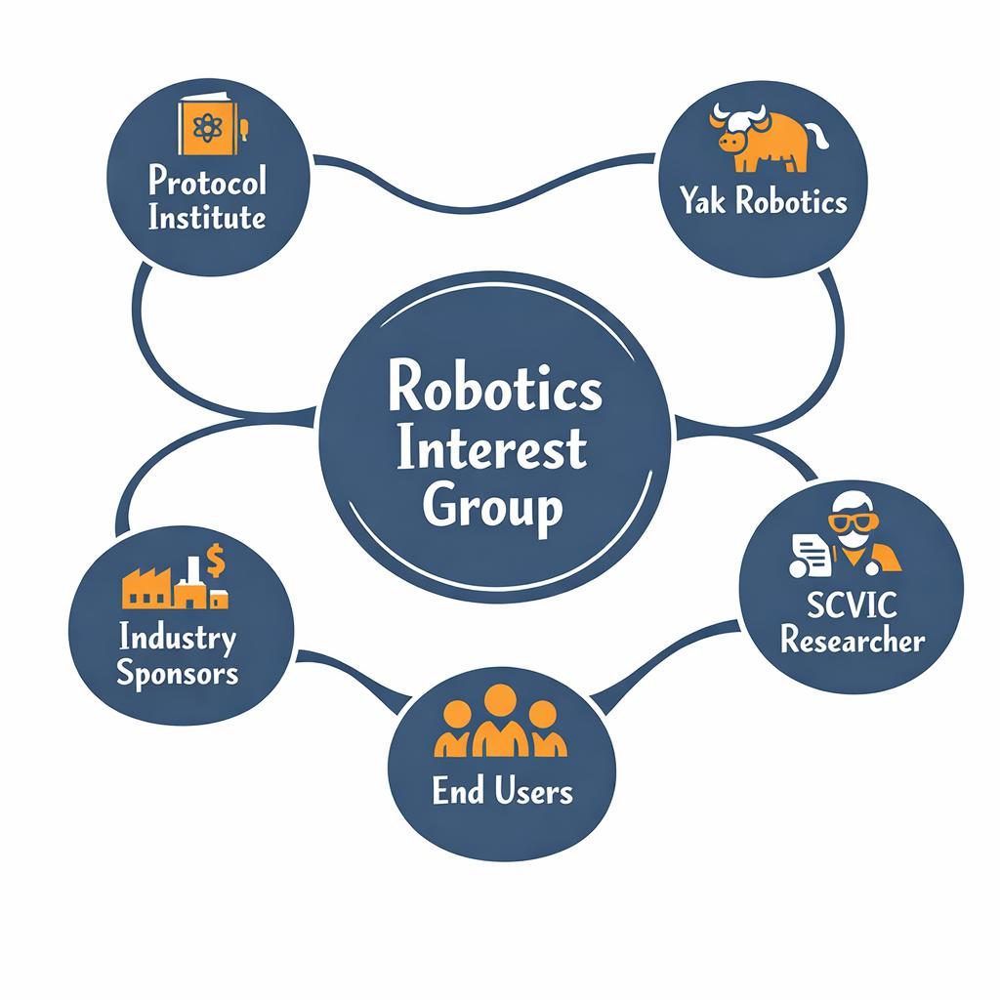
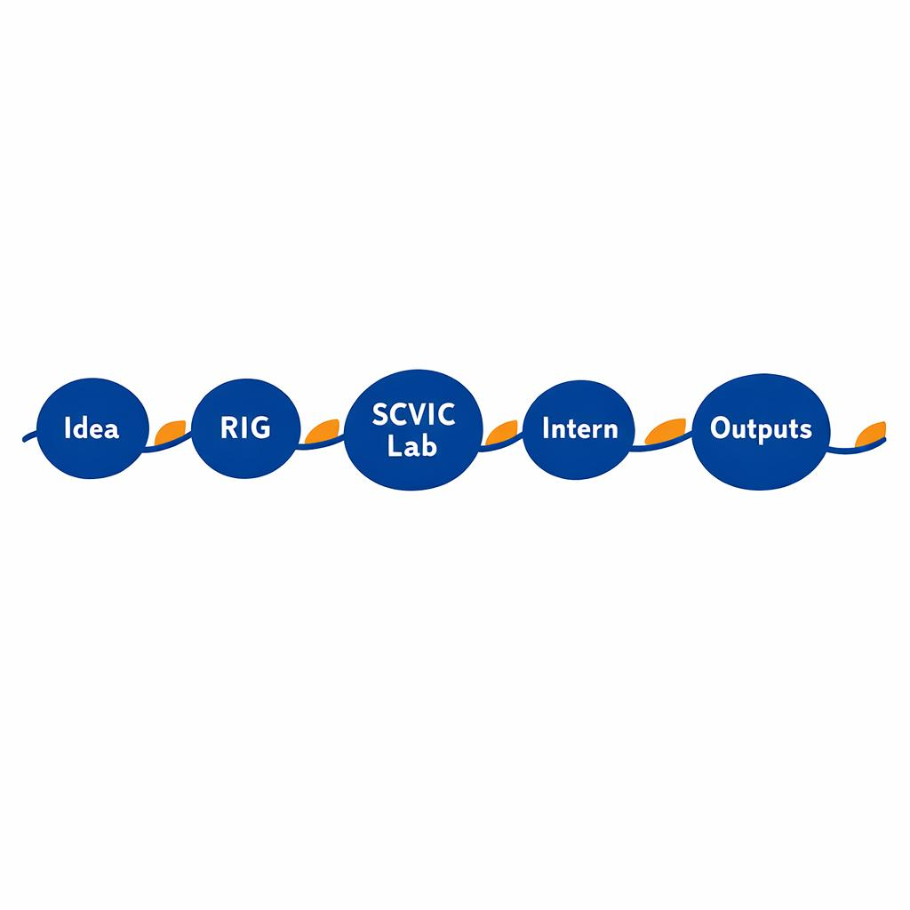
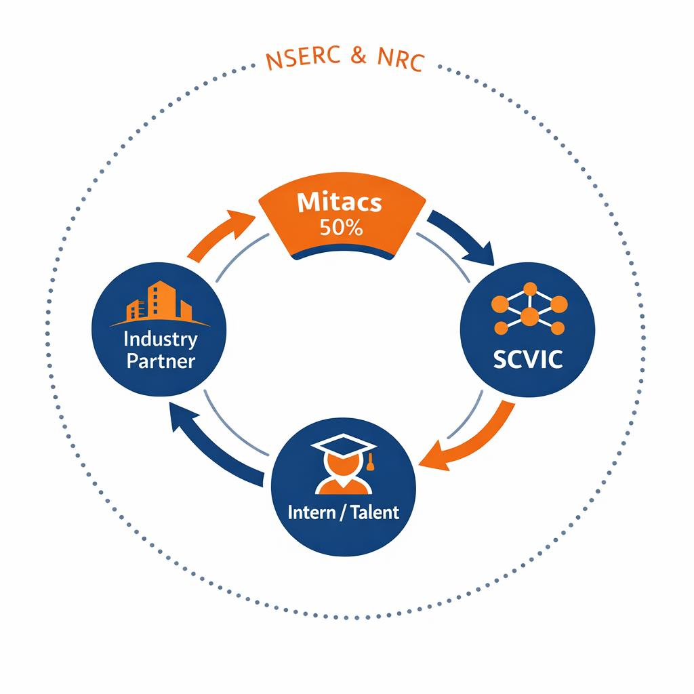

Robotics Interest Group (RIG)
A playful, lightweight governance layer for applied research in agentic robotics. Not a lab. Not a grant vehicle. A place where good projects can safely form.
How the RIG is structured
- Hosted by the Protocol Institute
- Volunteer, advisory, consensus‑led
- Founding members from Yak Robotics
- Embedded SCVIC researcher for execution continuity
- Industry + end users shape questions, not answers

How projects actually happen

- Project idea emerges
- RIG helps shape scope & constraints
- SCVIC executes in‑lab
- Intern embedded in real work
- Outputs circulate openly
Funding + talent flywheel
- Industry partner funds the problem
- Mitacs covers ~50% of intern support
- SCVIC provides lab + full‑time researchers
- Talent learns by doing
- Future paths: NSERC · NRC (drones, sensing, AI)

Why industry shows up
- Train people who can actually work with agents
- Experiment without committing to products
- Shape problems before markets harden
Agents are starting to operate in the real world. Someone has to learn how to supervise them.